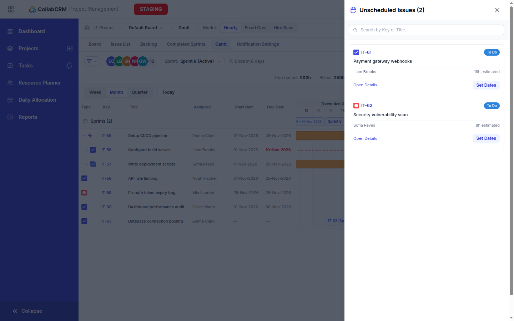
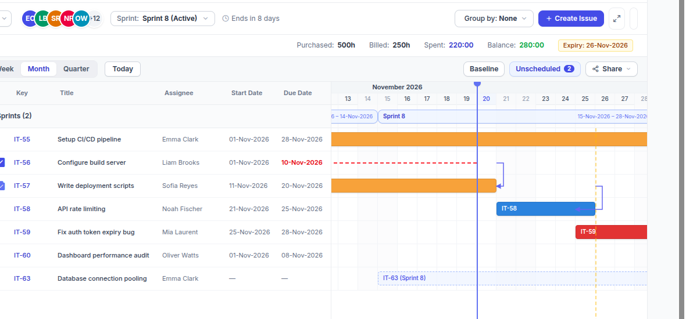
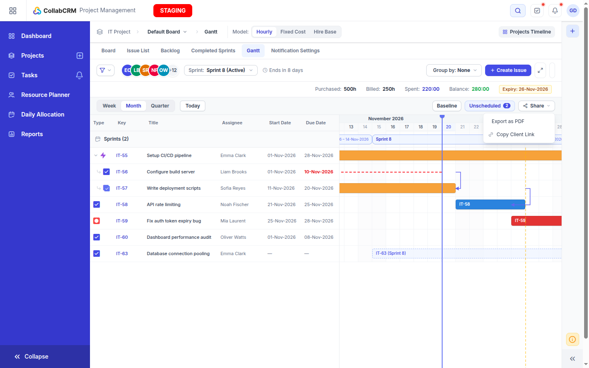
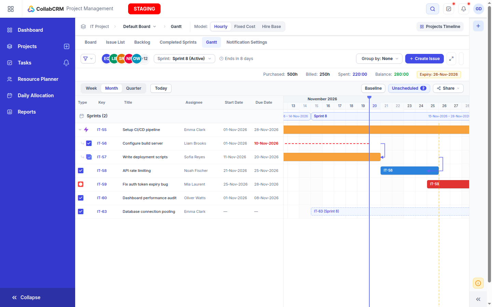

Read first
A Gantt is a calendar view of the board.
Each issue is a coloured bar from its Start Date to its Due Date. The team sees what happens when.
NEW = this part is to be built. Text without the tag already works in CollabCRM today.
Words used in these stories
14
| Term | Meaning |
|---|---|
| bar | one coloured strip per issue, from Start Date to Due Date. |
| today line | a line that marks the viewer’s local date. |
| past due | an open issue past its Due Date, shown with a red outline. |
| Epic summary bar | one bar that spans all the children of an Epic. |
| Sub-Task row | a child issue shown under its parent. |
| dependency line | a line that joins two linked issues. |
| baseline | the saved first plan shown under today’s bars. |
| Unscheduled list | issues that have no Start Date or sprint. |
| Group by | a filter that gathers rows under a chosen heading. |
| Quarter view | a zoom that shows three months at once. |
| Hire Base | a project billed by developers and contract dates. |
Common rules
Read these once. The stories do not repeat them.
| Rule | What it means |
|---|---|
| Access | To read the Gantt: Task management → View. To change dates, link issues, save a baseline: Task management → Edit (Project Management → Config → Access Levels). |
| Where it lives | Side Navigation bar → Tasks → <project> → Board → Gantt. Or Projects → <project> → Task Boards → View Task Board → Gantt. Every story starts here unless it says otherwise. The user is logged in with a registered Email ID and Password. |
| NEW One toolbar | All Gantt controls sit in one toolbar, left to right: Sprint, Group by, Type | Week, Month, Quarter, Today | Baseline, Unscheduled. Active filters show as chips with one “Clear all”. |
| Bar colour | The bar takes the colour of its status column on the board: To Do #2B83DE, In Progress #F7A23A, In Review #E23333, Ready For QA #7EC451, Closed #696969. |
| NEW One hover card | Point at any bar to see: status, Start Date, Due Date, Logged Time against Estimated Time, and the saved baseline dates when the baseline is on. |
| Date changes | Every Start Date or Due Date change (form, panel, drag, drop) adds a History entry: “<user name> updated Start Date to <date>”. Watchers are told through “Other changes (title, description, priority, etc.)” in Notification Settings. |
| NEW Undo | After a drag or drop, a toast says “Dates updated” with an Undo link for 10 seconds. |
| Dates | Calendar days, DD-MMM-YYYY. “Today” is the viewer’s local date. Start Date must be on or before Due Date, or nothing is saved. Messages: “Start Date should be on or before Due Date.” and “Due Date should be on or after Start Date.” |
| Large boards | Epics start collapsed. Rows load as the user scrolls. |
Add a Start Date to an issue
Business Scenario: A client requests a major deliverable — "Payment Gateway Integration" — targeted for release on 20-Nov, requiring an estimated 4 working days of development effort.
Current Limitation: In current CollabCRM, issues only have a Due Date (20-Nov). Without an explicit start date, developers frequently begin work on the 19th or 20th, inevitably causing delivery deadline slips.
Solution & Workflow: When creating the issue in the Create Issue modal, the Project Manager selects both Start Date (17-Nov) and Due Date (20-Nov). Both the developer and PM have an unambiguous schedule commitment that development must commence on the 17th.
Business Value: Establishes clear delivery accountability, prevents last-minute project crunches, and enables precise bar placement on the Gantt timeline.

Acceptance Criteria
6
- Go to Side Navigation bar → Tasks → <project> → Issue List. Click “Create Issue”.
- NEW The pop-up screen shows Start Date and Due Date side by side, under Sprint. The other fields stay as today:TitleDescriptionAssigneeReporterIssue TypePrioritySprintEstimated Time
- Enter the Title. Pick the Issue Type:EpicStoryTaskBug
- Pick a Start Date and a Due Date. Click “Create”.
- NEW Open the issue. The right-side panel shows Start Date next to Due Date.
- NEW Click Start Date in the panel and pick a new day. It saves at once and the History tab logs it.
Field Values
2
| Field | Type | Required | Format | Error message |
|---|---|---|---|---|
| Start Date | Date | Optional | Date picker, placeholder “Select Date”, DD-MMM-YYYY, for example 30-Nov-2026. | NEW “Start Date should be on or before Due Date.” |
| Due Date | Date | Optional | Same picker and format. | NEW “Due Date should be on or after Start Date.” |
Validations
3
- Start Date must be on or before Due Date. If not, the issue is not saved.
- Start Date can stay blank. With no Start Date and no sprint, the issue goes to the Unscheduled list.
- Every change is logged and watchers are told (see Common rules).
Read the plan on the Gantt
Business Scenario: An active sprint contains 40 concurrent issues, and client stakeholders inquire: "What is our progress today, and what specific deliverables will complete next week?"
Current Limitation: Kanban boards show cards segregated into vertical status columns. Mentally synthesizing chronological progress, delivery sequences, and upcoming handoffs requires tedious manual inspection.
Solution & Workflow: The PM navigates to the Gantt tab. Each task renders as a continuous horizontal bar spanning its Start and Due dates. A vertical blue Today Line indicates expected completion progress against the current calendar day. Hovering over any task displays real-time logged vs estimated hours, assignee, and dates.
Business Value: Delivers instant operational transparency during daily standups and eliminates manual progress inquiries.

Acceptance Criteria
9
- Open the task board. It has these tabs:BoardIssue ListBacklogCompleted SprintsNEW GanttNotification Settings
- NEW Click “Gantt”. The left grid shows:Type iconKeyTitleAssigneeStart DateDue Date
- NEW Each issue is one bar from Start Date to Due Date. The today line marks the viewer’s local date.
- NEW An open issue past its Due Date gets a red outline. A dashed part reaches the today line.
- NEW Use “Add Child” on a parent. Sub-Task rows sit under it with a collapse arrow. An Epic gets one summary bar over its children.
- Click any row to open that issue’s panel.
- NEW Narrow the chart from the toolbar. Filters combine:SprintGroup by: None, Epic, Story, TaskType: Epic, Story, Task, Bug
- NEW Pick Week, Month or Quarter. Click “Today” to jump back to the today line.
- NEW Weekends are shaded grey. Company holidays are shaded too (People → Config → Master Data → Holidays).
Field Values
5
| Field | Type | Required | Format | Error message |
|---|---|---|---|---|
| Sprint | Dropdown | Optional | None, Backlog, and every sprint including completed ones. | — |
| Group by | Dropdown | Optional | None, Epic, Story, Task. | — |
| Type | Dropdown | Optional | Epic, Story, Task, Bug. | — |
| Time zoom | Button group | Optional | Week, Month, Quarter. Reuses the control on Daily Allocation. | — |
| Today | Action | Optional | Jumps to the viewer’s local date. | — |
Validations
6
- Bar colour follows the status column (see Common rules).
- An empty board shows the project dates and sprints. The existing “Create” button adds the first issue.
- Filters change what is shown. Issue data stays the same.
- The today line and past-due outline stay visible in every zoom.
- Each bar date change is saved in the issue History tab.
- Large boards: epics start collapsed and rows load on scroll.
View project hours and sprints on top
Business Scenario: The organization manages projects across distinct commercial engagement models — Fixed Cost, Hourly Bucket, and Hire Base.
Current Limitation: Project managers must navigate away to separate financial reports to check budget status while planning sprint activities.
Solution & Workflow: The top KPI header dynamically adapts to the project's commercial model:
• Fixed Cost: Shows Estimated Budget Hours vs Total Spent Hours alongside active sprint dates.
• Hourly: Displays Total Purchased (500h), Billed (250h), Spent (220h), Balance (280h), and a contract Expiry Date marker.
• Hire Base: Displays contract start/end dates and remaining days.
Business Value: Keeps commercial budget health directly visible alongside sprint scheduling, preventing unbilled team overruns.

Acceptance Criteria
5
- Open the Gantt tab on any project board.
- NEW Directly above the timeline, the Project Hours KPI strip adapts dynamically to the project's Engagement Model: Hourly: Purchased, Billed, Spent, Balance, and Contract Expiry Date; Fixed Cost: Estimated Hours, Top-Up, Total, and Spent Hours; Hire Base: Contract Start, Contract End, and Remaining Days.
- NEW Pinned below the hours strip, the Sprint Header Row displays the active sprint name, date boundaries, and remaining time span.
- Both the Hours strip and the Sprint header row remain permanently pinned at the top while issue rows scroll vertically underneath.
- If an Hourly project's balance falls below 10% or contract expiry approaches within 7 days, an amber alert badge is displayed.
Field Values
2
| Field | Type | Required | Format | Error message |
|---|---|---|---|---|
| Project Hours Strip | KPI Bar | Read-only | Purchased, Billed, Spent, Balance, Expiry (Hourly) or Estimated/Spent (Fixed Cost) or Contract Dates (Hire Base). | — |
| Sprint Header Row | Timeline Row | Read-only | Active sprint name, start date, end date, and duration span. | — |
Validations
4
- The KPI header changes automatically based on the project's Engagement Model (Hourly, Fixed Cost, Hire Base).
- The Expiry Date line and warning alerts show for Hourly projects based on project contract details.
- Sprint header row reads dates and duration directly from the project's Backlog records.
- The header KPI strip and sprint bar stay pinned at the top during vertical scrolling of the task grid.
Change dates from the Gantt
Business Scenario: A client requests a schedule shift: "Postpone campaign deliverables by 3 days and shift the final completion deadline accordingly."
Current Limitation: The PM must open 10 individual task details, manually edit both Start and Due dates in forms, and save each one — requiring dozens of repetitive interactions.
Solution & Workflow: On the Gantt chart, the PM drags the task bar forward by 3 days — updating both Start and Due dates in a single motion. Dragging a bar edge expands or contracts duration. An undo notification enables 1-click reversion within 10 seconds. Undated backlog tasks in the Unscheduled drawer can be scheduled directly by inputting dates.
Business Value: Reduces sprint rescheduling time from 20 minutes to seconds while preserving an exact audit history.

Acceptance Criteria
8
- NEW Drag the body of a bar. Start Date and Due Date move by the same number of days.
- NEW Drag the left edge to change Start Date. Drag the right edge to change Due Date.
- Release. Both dates save and an Undo toast shows. Open the issue panel and History tab to see the change.
- NEW Click “Unscheduled” in the toolbar. It shows the count of issues with no dates and opens a side panel. Search by Key or Title.
- NEW Drag an issue from the panel onto an empty spot on the calendar. Start Date and Due Date follow the drop position. A solid bar appears and the count falls by one.
- NEW No dragging? Click the issue in the panel and pick dates in a date picker. The result is the same.
- NEW Or choose a Sprint in the issue panel. A light bar spans that sprint’s Start Date to End Date.
- A teammate with View access opens the same Gantt and sees the new dates. The drag control stays hidden.
Field Values
3
| Field | Type | Required | Format | Error message |
|---|---|---|---|---|
| Start Date | Date | Optional | Calendar days, DD-MMM-YYYY. Set by the drop position. | NEW “Start Date should be on or before Due Date.” |
| Due Date | Date | Optional | Calendar days, DD-MMM-YYYY. Set by the drop position. | NEW “Due Date should be on or after Start Date.” |
| Search | Alphanumeric | Optional | Matches Key or Title in the Unscheduled list. | — |
Validations
6
- Edit access can drag. View access reads the chart.
- Two people editing the same bar: both entries stay in History. The latest save shows on refresh.
- No dates and no sprint: the issue stays in the Unscheduled list.
- No dates but a sprint: a light bar spans the sprint.
- Due Date and Estimate but no Start Date: a dashed bar ends on the Due Date. Its length is 8 hours to 1 working day.
- The Unscheduled list stays searchable on large boards (for example 765 Backlog and 724 To Do issues).
Link issues and compare with a baseline
Business Scenario: A client agreement establishes a committed committed delivery deadline of 30-Nov.
Current Limitation: When task delays occur mid-sprint, dates are overwritten directly. At project sign-off, management lacks verifiable evidence comparing the initial contractual baseline against subsequent revisions.
Solution & Workflow:
• Freeze Plan (Day 1): After planning, the PM clicks "Save Baseline" (e.g. "Agreed Plan") to freeze original commitment dates.
• Dependency Links: Dependent issues are visually linked (Finish-to-Start). If a blocker task slips past the start date of a successor, the connector line highlights in red to flag a scheduling conflict.
• Track Variance (Day 15): When tasks slip to 05-Dec, a faint grey baseline bar remains anchored at 30-Nov beneath the colored bar. Hovering clearly displays: Planned: 30-Nov | Actual: 05-Dec (Delay: 5 days).
Business Value: Delivers incontrovertible audit documentation for client governance and protects agency contractual scope.

Acceptance Criteria
6
- Go to Tasks → <project> → Issue List → <issue key> → Link Issue. Pick “Blocks” or “Is Blocked By”, pick the target issue, click “Link”. NEW History logs user name, link type and linked issue key.
- NEW Open the Gantt. A dependency line joins linked issues:
- Finish-to-start: ends at the blocked issue’s Start Date
- Start-to-start: joins two Start Dates
- Finish-to-finish: joins two Due Dates
- NEW If a blocked issue starts before its blocker ends, the line turns red and the bar flags the scheduling conflict.
- NEW Click “Baseline” on the toolbar, enter a name (e.g. “Agreed plan”), and click “Save baseline”. The original commitment dates of every dated issue are frozen.
- NEW When a task delays or moves forward to a later date, a faint grey baseline bar stays stuck at the original dates underneath the current colored bar.
- NEW Point at the moved bar: the hover card clearly shows planned vs actual dates and slip: “Planned: 30-Nov-2026 | Actual: 05-Dec-2026 (Delay: 5 days)”. Toggle “Show baseline” to show or hide the saved grey bars.
Field Values
2
| Field | Type | Required | Format | Error message |
|---|---|---|---|---|
| Link relationship | Dropdown | Optional | Is Blocked By, Blocks, Is Cloned By, Is Duplicated By, Duplicates, Related To. NEW On the Gantt: start-to-start and finish-to-finish. | — |
| Baseline name | Alphanumeric | Mandatory | Free text, for example Agreed plan. | NEW “Baseline name is required.” |
Validations
4
- Existing link types are kept. Linked issues still show under Linked Issues on the panel.
- Deleting an issue removes it and its lines from the chart.
- The baseline keeps the first saved dates even after bars move: a faint grey bar stays stuck at the original dates under the moved bar and the hover card shows planned vs actual dates with delay in days.
- Saving a baseline adds no History entry and leaves work logs untouched.
Plan people on a Hire Base project
Business Scenario: A client retains dedicated developers (e.g., Liam Brooks and Sofia Reyes) on a monthly Hire Base contract ending on 28-Nov.
Current Limitation: Dedicated resources might inadvertently be assigned tasks across different projects by multiple project managers, resulting in contractual double-booking.
Solution & Workflow:
• Developer Contract Bands: Grouping by developer displays horizontal contract duration bands (e.g., 01-Nov to 28-Nov, 8 days left). Tasks scheduled outside active contract dates trigger boundary alerts.
• Double-Booking Warning: If a developer is simultaneously scheduled on another project (e.g. Apex E-Commerce), a red ⚠️ Double-Booked banner highlights the clash with a [Resolve] shortcut to reallocate capacity.
Business Value: Enforces dedicated developer contractual commitments and prevents client billing disputes.

Acceptance Criteria
6
- Go to Projects → <project> → Resources. Read each developer’s contract Start Date and End Date.
- NEW Open the Gantt. It opens grouped by developer (Assignee), one row per person.
- NEW Contract bands span each developer’s contract dates. They show a Remaining Days counter from the Hirebase Report.
- NEW A developer on two projects for the same days gets a double-booking warning on the overlapping band.
- Open Side Navigation bar → Resource Planner. The overload strip below the chart marks the same developer. Use Week, Month or Quarter, and the Graph, % or Hours toggle.
- Change the allocation dates and go back to the Gantt. The warning clears.
Field Values
4
| Field | Type | Required | Format | Error message |
|---|---|---|---|---|
| Assignee | Dropdown | Mandatory | Project resources: Developer, Designer, Quality Analyst (QA). | — |
| Contract Start Date | Date | Optional | DD-MMM-YYYY, for example 01-Sep-2026. | — |
| Contract End Date | Date | Optional | DD-MMM-YYYY, for example 04-Dec-2026. | — |
| Remaining Days | Number (calculated) | Display field | Whole days left on the contract, for example 15. | — |
Validations
4
- Shared days across projects raise a double-booking warning on the overlapping band.
- Remaining Days comes from the hire contract record.
- The Resource Planner overload strip marks the same over-allocation.
- Grouping by developer uses the Assignee field on the board.
See all boards and all projects
Business Scenario: Delivery Heads and Executive Management need an overall status overview across 15 concurrent company projects during portfolio review meetings.
Current Limitation: Reviewing multiple projects requires navigating into individual project boards separately, consuming hours without generating a unified executive roadmap.
Solution & Workflow:
• Multi-Board Project View: Within a project, tasks across multiple boards (e.g. Default and Test) consolidate into one continuous Gantt view.
• Projects Timeline (Dashboard): Navigating to Dashboard opens the consolidated Projects Timeline, displaying all active company engagements (Fixed Cost, Hourly, Hire Base) on a single portfolio calendar with 1-click drill-down.
Business Value: Gives leadership an instant strategic overview of company-wide project delivery status and organizational capacity.


Acceptance Criteria
6
- Go to Projects → <project> → Task Boards. Note the boards, for example Default and Test. NEW Click “Project Gantt”.
- NEW One grid and one calendar show issues, epics and sprints from all boards. A board column or grouping shows each row’s board. Each board keeps its own bars and status colours.
- Open one board’s Gantt tab to go back. Both views read the same issue records.
- NEW Go to Side Navigation bar → Dashboard. Read “Total Projects” and “Projects by Engagement Model & Status”. Open the Projects Timeline:Fixed CostHourlyHire Base
- NEW Each project is a row with its active duration marked. Start Date and End Date are bands. Week, Month, Quarter and Today work as on a board.
- Click a project row to open that project’s Gantt.
Field Values
3
| Field | Type | Required | Format | Error message |
|---|---|---|---|---|
| Project | Dropdown | Optional | Projects the user can see (name and Engagement Model). | — |
| Board | Dropdown | Optional | Boards of the chosen project, such as Default and Test. | — |
| Time zoom | Button group | Optional | Week, Month, Quarter, Today. | — |
Validations
4
- Each board keeps its own Gantt. The project view reads them all together.
- An issue moved between boards keeps its dates and shows under its new board.
- The project view uses the same Backlog dates as the boards.
- The Projects Timeline reads dates from project records. All Engagement Models show together.